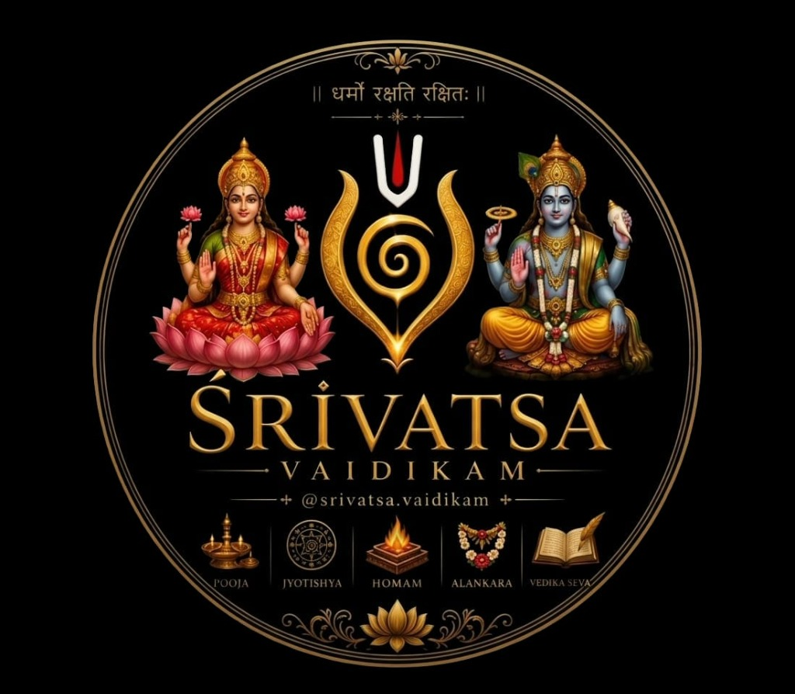
Srivatsa VaidikamAuthentic Vedic Services & Sacred Ceremonies
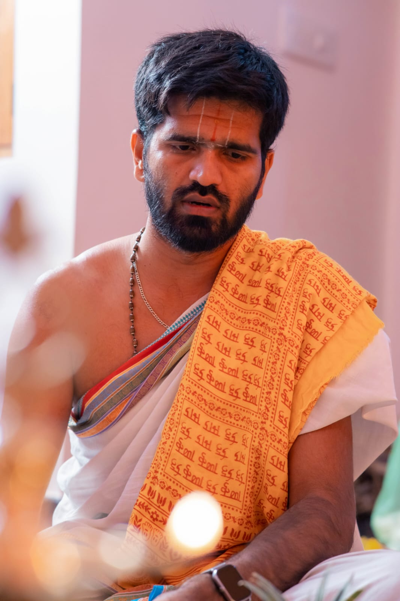
🕉️Vedic Scholar & Chief Purohit
A devoted Vedic scholar committed to performing authentic Hindu rituals and sacred ceremonies. With deep knowledge of Shastras and years of dedicated practice, Pandit Keerthi Bharadwaj brings divine blessings to every occasion.
15+ Years of experience in Vedic rituals & ceremonies
Fluent in Kannada, Hindi & Sanskrit
5000+ Ceremonies performed with devotion
Expertise in Pooja, Homam, Jyotishya, Alankara & Vedika Seva
Available across Karnataka & nearby states
✦ ✦ ✦
Performing authentic Vedic rituals with devotion and precision for every occasion in life.
Explore our full catalog of sacred ceremonies organized by traditional Vedic categories for festivals, life events, homams, remedies, and ancestral blessings.
Performs sacred Satyanarayana Vratha with full Kalasha Sthapana, 5-chapter Katha recitation, and Prasad offering for family harmony, peace, and abundance.
Special worship of Goddess Mahalakshmi and Lord Kubera for wealth, financial stability, business prosperity, and Diwali Lakshmi Pooja.
Sacred Abhishekam to Lord Shiva with Panchamrita while chanting Sri Rudram and Chamakam to remove negative energies, chronic ailments, and attain inner peace.
Elaborate worship of Lord Vighnaharta Ganesha with 21 Modakas, Durva grass, and Atharvashirsha chanting to overcome obstacles before all new undertakings.
Devi Mahatmya / Durga Saptashati parayana, Navadurga pooja, and kumkumarchana for victory over enemies, mental strength, and spiritual upliftment.
Worship of Goddess Saraswati for students, artists, and professionals, along with Aksharabhyasa ritual initiating young children into education.
Complete housewarming ceremony including Go-Pooja, Dwara Pooja, Ganapati Homa, Vastu Shanti Havan, and Navagraha Homa to bless the new dwelling.
Authentic Vedic marriage ceremonies including Kanyadaana, Mangalya Dharana, Saptapadi, and Laja Homa uniting the bride and groom under sacred mantras.
Sacred thread initiation rite with Gayatri Mantra Upadesha, Yajnopavita Dharanam, and Brahmopadesha guiding the boy into Vedic spiritual studenthood.
Traditional newborn naming ceremony based on Janma Nakshatra and the sacred first solid food feeding rite praying for the child's vitality and health.
Celebration of completing 60 years (Ugraratha Shanti) or 70/80 years (Bhimaratha / Sahasra Chandra Darshana) with Ayushya Homa and renewal of marriage vows.
Consecrated fire ceremony invoking Lord Ganesha with Ashtadravya offerings to burn away all obstacles and ensure total victory in all pursuits.
Powerful Vaishnava havan with Sudarshana Yantra mandala invoking the divine disc of Lord Vishnu to remove evil eye (Drishti), fear, and negative energies.
Vedic havan invoking Lord Shiva with the life-giving Maha Mrityunjaya mantra for quick recovery from severe illness, mental peace, and protection from untimely death.
Appeasing the nine planetary deities with their respective Samidhas (sacred twigs), grains, and mantras to pacify unfavorable planetary periods (Dasha / Antardasha).
The ultimate Vedic fire sacrifice invoking Goddess Chandika through 700 verses of Durga Saptashati for victory in legal matters, supreme protection, and prosperity.
Intricate Naga Mandala rangoli pooja, Ashlesha Bali, and Sarpa Samskara ritual to remedy Sarpa Dosha, hurdles in childbirth (Santhana Bhagya), and skin ailments.
Worship of Vastu Purusha and Digpalakas with Vastu mandala setup to correct structural faults, directional flaws, and infuse home or workplace with positive vibes.
Specialized Vedic ritual pacifying Rahu and Ketu to remove constant delays in marriage, setbacks in career, financial stagnation, and unexplainable hurdles.
Performing annual Shraddha, Amavasya Tarpanam, Mahalaya Pitru Paksha karyas, and Tila Homa with sacred sesame seeds and water to receive ancestral blessings.
Sacred immersion of mortal remains at Kaveri Paschima Vahini Sangama in Srirangapatna followed by traditional Pinda Pradhanam and Tila Tarpanam for peace of the departed soul.
Special Vedic ritual performed at Srirangapatna to liberate ancestors from unnatural death, pitru shapas, and unresolved karmic bondage, invoking Lord Maha Vishnu.
Powerful ancestral appeasement rite with three consecrated pindas (for satva, rajas, tamas souls) and sacred sesame fire oblations to eliminate chronic Pitru Dosha.
Specialized serpent deity worship on Ashlesha Nakshatra at sacred riverbanks in Srirangapatna & Mysore to resolve Sarpa Dosha, Kuja Dosha, and hurdles in childbirth.
Consecrated havan invoking Ayur Devata, Markandeya, and Chiranjeevis for children on birthdays and elders for healthy, radiant, and prolonged life.
Vedic fire sacrifice invoking Lord Dhanvantari, divine physician of the Gods, with sacred medicinal herbs to overcome chronic illnesses and physical ailments.
Sacred fire offering chanting the sacred Swayamvara Parvathi mantra to eliminate delays in finding a suitable life partner and blessing devotees with early marriage.
Beloved ritual dedicated to child Krishna (Bala Gopala) with Purusha Sukta chants praying for healthy progeny, conception, and smooth pregnancy.
Dynamic fire sacrifice invoking Lord Lakshmi Narasimha for protection from legal enemies, debt clearance (Rina Vimochana), and fierce spiritual shield.
✦ ✦ ✦
Sacred Kshetras & CoverageAvailable for sacred riverbank rituals at Kaveri Paschima Vahini, home ceremonies, apartment poojas, and temple homams with complete Vedic authenticity.
✦ ✦ ✦
Common QuestionsEverything you need to know about booking rituals, ceremonies at Srirangapatna, and Vedic services in Mysore & Mandya.
You can book easily by clicking the "Book Now" button on our website, calling us directly, or sending a message on WhatsApp. We will discuss the auspicious date (Muhurtha), specific ritual needs, and provide the complete list of samagri required.
Srirangapatna's Kaveri Paschima Vahini is one of the most sacred spots in India for ancestral liberation. We conduct Asthi Visarjana, Pinda Pradhanam, Narayana Bali, Tripindi Shraddha, Tila Homa, Mahalaya Paksha Shraddha, and Amavasya Tarpanam with complete Vedic sanctity.
Yes. Pandit Keerthi Bharadwaj regularly travels to homes, apartments, commercial sites, and marriage halls across Mysore, Mandya, Bangalore, and all Karnataka districts for ceremonies.
Yes. We provide a clear itemized list of fresh items for the family to keep ready (fruits, flowers, coconuts), and we can also arrange the specialized sacred samagri, dry herbs (Samidhas), homa dravyas, and copper homa kunda upon prior request.
We perform Shastraic pariharas including Naga Pratishtha, Ashlesha Bali, Sarpa Samskara, Kala Sarpa Dosha Nivarana, Navagraha Shanti, and complete residential/commercial Vastu Shanti with Vastu Mandala installation.
Yes. We offer authentic Vedic astrology consultations including Janma Kundali analysis, Vivaha horoscope matching, auspicious Muhurtha calculation for housewarmings and weddings, and planetary remedies.
✦ ✦ ✦
A glimpse of the divine ceremonies and sacred rituals performed with devotion and authenticity.
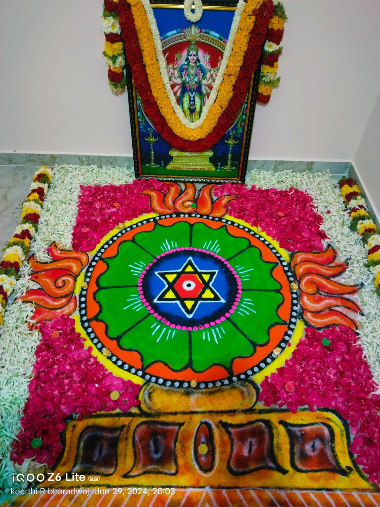
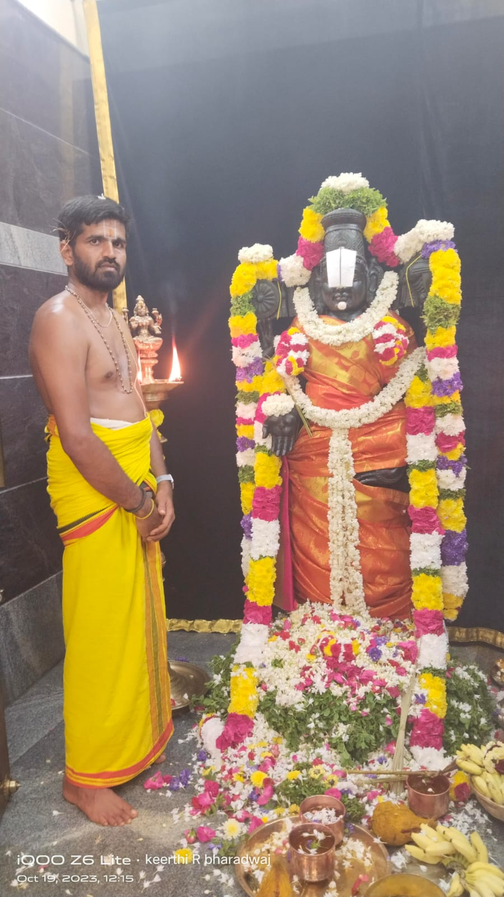
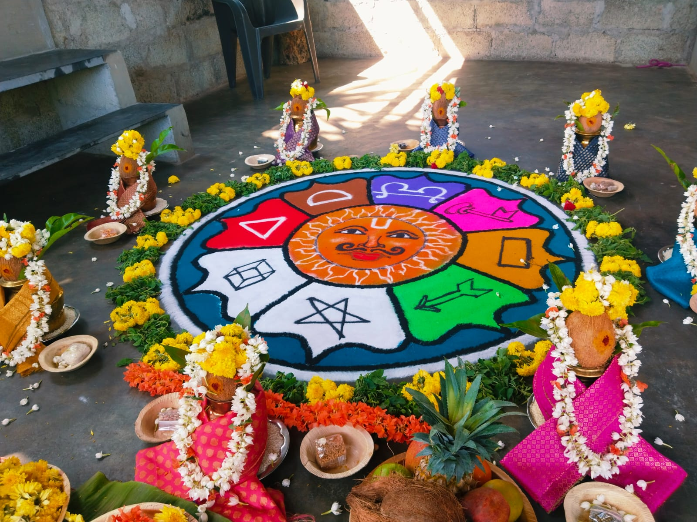
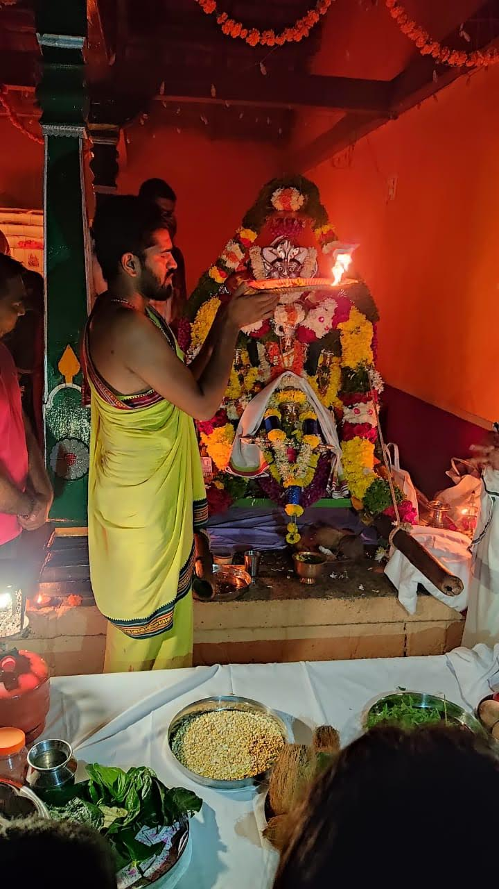
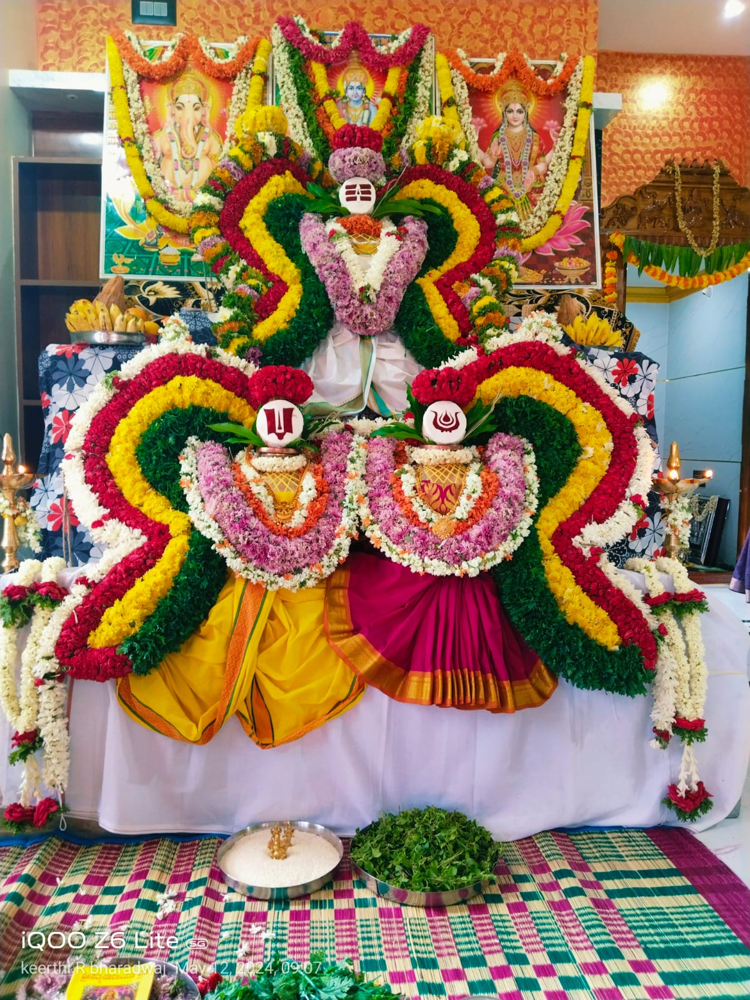
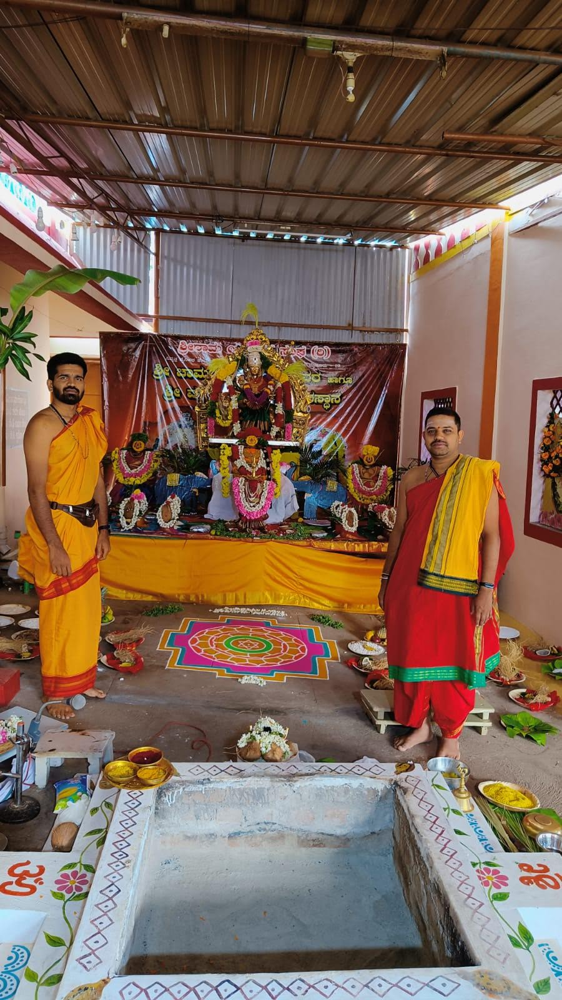
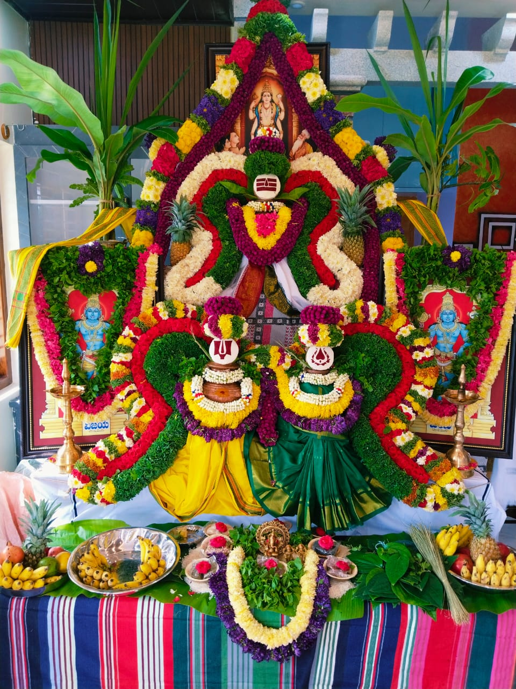
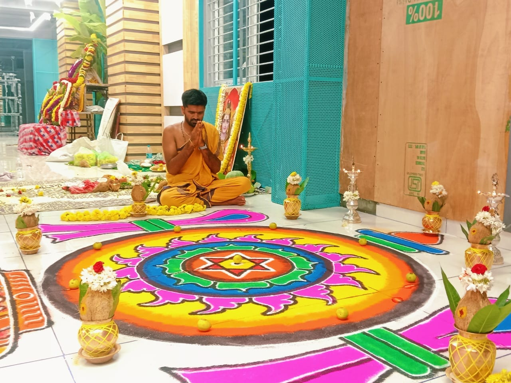
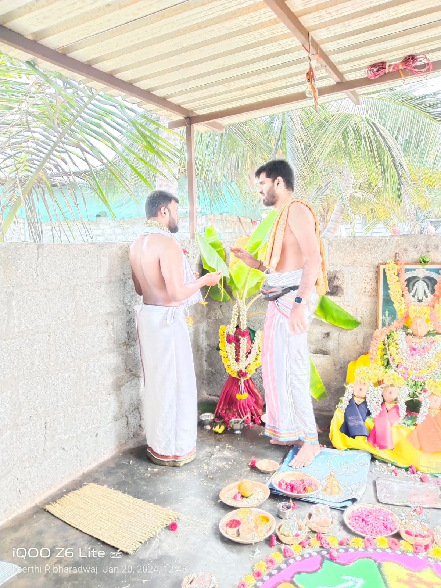
✦ ✦ ✦
Reach out to us for booking ceremonies, consultations, or any queries about our sacred services.